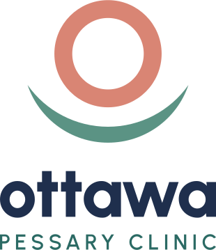
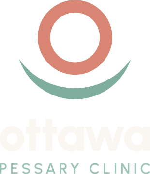

Brand guidelines v1.0 · final · two sibling clinics
Two marks, one family.
Both logos are built from circles and share one typeface, Urbanist: rings that connect for Core Connections, a coral ring resting on a sage arc for the Ottawa Pessary Clinic. Wordmarks are outlined vector paths, and each subtitle is tracked so its ink width matches the name above it exactly. Every file below is an SVG in assets/brand/.
Core Connections Physiotherapy
Mark: approved · Wordmark: UrbanistConstruction and alignment
- x = the core's diameterOne third of the mark's height. Keep at least x clear on every side.
- Flush left, flush rightPHYSIOTHERAPY is tracked to 0.3 em so its ink runs edge to edge with "core connections".
- Centred on the text blockThe mark is 1.32× the text block height and shares its vertical centre. Gap to text is 0.26× mark height.
- Lowercase over capsUrbanist ExtraBold lowercase at −2% tracking over SemiBold caps. The round bowls echo the rings.
Versions and minimum size
One colour · fax, stamps, embroidery
Colour
Pattern · Connected rings
Motion · Converge

0–1.6 s · rings rotate 120° into place, staggered 120 ms
0.95 s · core pops in with a soft overshoot
1.25 s · wordmark slides in, subtitle 200 ms later
Idle · core pulses 8% every 4 s. Reduced motion shows the final frame.
Assets
App icon and favicon · 128, 32, 16 px
Core Connections@coreconnections
Heather GrewarFounder · PhysiotherapistWestboro, Ottawa
Don't
Don't stretch or squash
Ottawa Pessary Clinic
Mark: Supporting Arc · Wordmark: Urbanist

Construction and alignment
- x = one third of the markSame rule as Core Connections, so the two logos sit at equal weight side by side.
- Same type as Core Connections"ottawa" in Urbanist ExtraBold lowercase over SemiBold caps, so the two clinics read as one family.
- Matched measureThe descriptor is tracked to 0.2 em and sized so both lines end on the same vertical.
- Centred on the text blockMark is 1.42× the text block height with a 0.24× gap.
Versions and minimum size
One colour · Navy only
Reverse · on Navy
Minimum · lockup 120 px wide, mark 20 px
Colour
Pattern · Cradle
Motion · Hold and breathe

Support first · the sage arc rises from below
Then the ring · coral, drawn clockwise from 12 o'clock
1.5 s · "Ottawa" slides in, descriptor 200 ms later
Idle · the coral ring breathes on an 8 s cycle, matching the site's Breath motion
Assets
App icon and favicon · 128, 32, 16 px
Ottawa Pessary Clinic@ottawapessaryclinic
Pessary fittings and follow-up careWestboro, Ottawa
Together
Files
All files are SVG with outlined type, in assets/brand/.
{{ g.name }}
{{ f.file }}{{ f.use }}